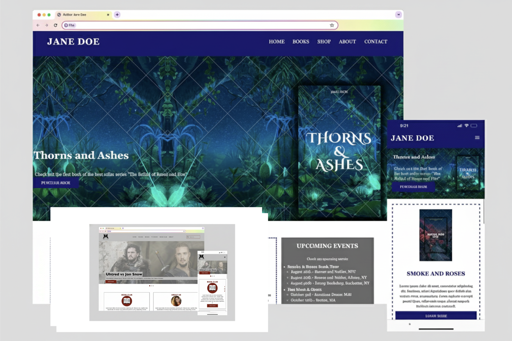
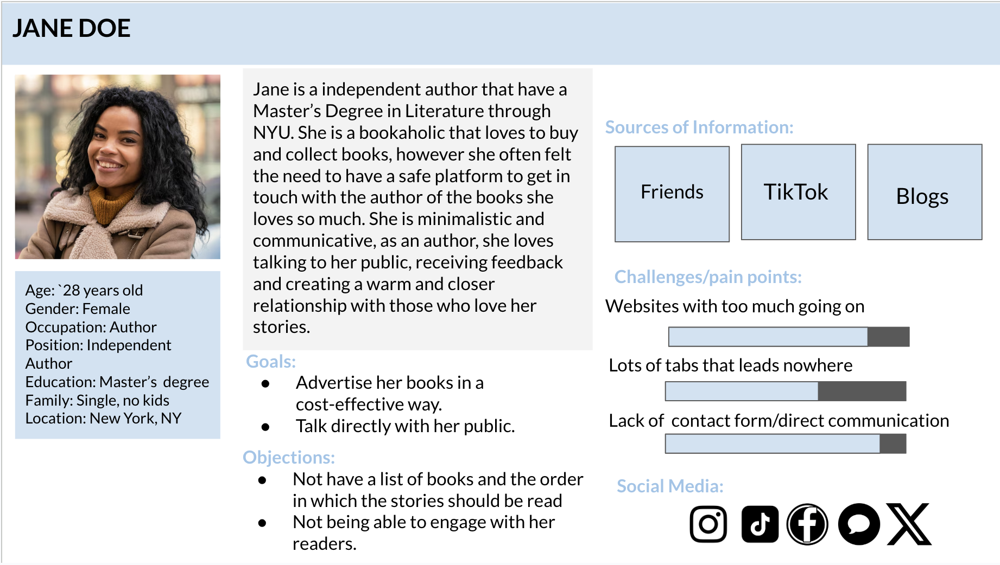
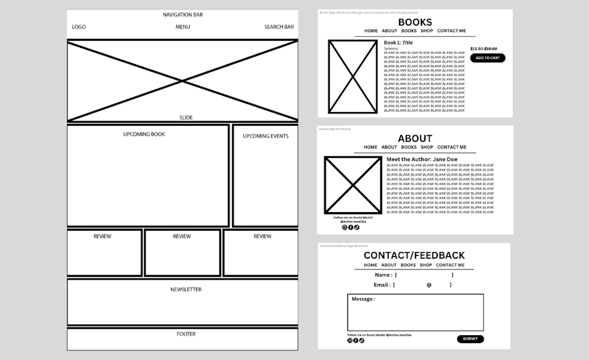

Style Title

Web Development | UX Design | UX Research | UI Design

This project was completed for an Informatics course at the State University of New York at Albany and centers on a fictional client, Jane Doe, an independent author in need of a centralized digital presence. The goal was to design a website that could effectively showcase her work, promote new releases, and serve as the primary communication channel between the author and her audience.
Given that the site functions as both a marketing tool and an e-commerce platform, a strong emphasis was placed on usability, content organization, and accessibility.
Key features include an online shop, news feed, book recommendations, detailed book pages with covers and synopses, an author biography, events section, and a contact form that enables direct engagement with readers.
As an independent author, the client lacked a centralized and user-friendly platform to connect directly with her readers. Building and maintaining a strong author–reader relationship was essential, yet she also needed a way to showcase her work, share timely updates, and support direct book sales simultaneously.
Because her books are not distributed through large corporate bookstores, visibility and publicity were limited, making direct sales a critical requirement. Additionally, the client needed a budget-friendly, cost-effective solution that could function as both a marketing tool and a sales platform without relying on third-party services.
The solution was to design and develop a unified digital hub for the author’s brand, content, and commerce. The experience prioritizes usability and clear information architecture, enabling readers to easily browse books, access synopses, stay informed through a news feed, and complete purchases with minimal friction.
A streamlined navigation structure, reduced click paths, and an attention-driven color palette support discoverability and engagement. Key features include an e-commerce page, detailed book pages, curated recommendations, an author biography, events section, and a contact form to encourage direct communication between the author and her readers.
By consolidating content, communication, and sales into a single platform, the website improves content discoverability and reduces friction in the purchasing process. Readers can more easily engage with the author, explore her work, and complete purchases without relying on third-party services.
The solution provides the author with a cost-effective, scalable digital presence that strengthens the author–reader relationship and supports long-term growth in visibility, engagement, and direct sales.
A hypothetical client interview was conducted to better understand Jane’s goals, motivations, and constraints as an independent author. The primary objective of this interview was to inform the creation of a persona, allowing for a deeper understanding of Jane’s frustrations, limitations, and key priorities.
Through persona development and analysis, it became clear that Jane values clarity, minimalism, and easy access to information—both as a reader and as an author. These insights helped define the core requirements for the project and guided early design decisions.
Key goals identified during the interview included promoting her books in a cost-effective way, clearly presenting her catalog and recommended reading order, and creating a welcoming space where readers could engage with her directly.
Conducting these activities helped identify priorities such as simplicity, direct reader engagement, and cost-effective promotion. The competitive analysis highlighted industry best practices and gaps, guiding feature selection and layout choices. However, because this research was hypothetical, there were limitations in validating assumptions with real users. Additionally, more detailed exploration of Jane’s frustrations and typical user behavior could have further refined the persona and informed design decisions. Overall, the research successfully informed early design strategy, but future iterations would benefit from usability testing and iterative feedback to strengthen the solution.
A competitive analysis was conducted by reviewing websites and online presences of other independent authors and small publishing platforms. Many relied heavily on third-party marketplaces or social media, resulting in fragmented user experiences and limited opportunities for direct engagement.
More successful examples shared common characteristics: clear book catalogs with recommended reading order, dedicated author pages, simple navigation, and integrated contact or newsletter features. However, these solutions were often complex or costly, making them less accessible for independent authors with limited budgets.
This analysis informed the decision to focus on a minimal, scalable solution that balanced usability, visibility, and affordability.
User Preferences and Values: Jane values clarity, minimalism, and easy access to information. Readers also prefer straightforward navigation and clearly organized content.
Pain Points: Existing author websites and marketplaces are often fragmented, cluttered, or costly. Independent authors struggle to maintain visibility and direct engagement with their audience.
Features: Successful author websites typically include clear book catalogs with recommended reading order, integrated contact forms, author biographies, events or news sections, and intuitive navigation. Minimalist layouts and color schemes enhance usability and reduce cognitive load.
Design Priorities: The platform should consolidate content, sales, and communication into a single hub. It should streamline navigation, reduce click paths, and support scalability, all while remaining cost-effective and easy to maintain.


This project demonstrates the importance of user-centered design in creating a digital presence for an independent author. Through research—including a hypothetical client interview, with the use of personas, and competitive analysis—key insights about Jane’s goals, frustrations, and priorities were uncovered, guiding the design of a platform that balances content, commerce, and reader engagement. The resulting solution consolidates her catalog, news, events, and e-commerce functionality into a single, intuitive hub, emphasizing usability, clarity, and minimalism.
By addressing both the author’s and readers’ needs, the platform improves discoverability, streamlines the purchasing process, and fosters stronger author–reader relationships. While the project was based on a hypothetical client, it illustrates how research-driven design decisions can inform feature prioritization, information architecture, and interaction design. Future iterations could incorporate usability testing and iterative feedback to further refine the experience and ensure it meets real user needs.